📌 本章重点总结
- 概念来源：由 Mitchell Hashimoto 在 2026 年 2 月提出，随后 OpenAI 官方博客推广。核心思想是“设计一套包裹模型的外部环境，让 Agent 稳定交付”。
- AI 工程重心的三次演进：
- Prompt Engineering：让模型“听懂”任务（表达）。
- Context Engineering：让模型“知道”该用什么信息（供给）。
- Harness Engineering：让模型在真实执行中“持续做对”（驾驭）。
- 三者是包含关系：Prompt ⊂ Context ⊂ Harness。
- Harness 的简洁定义：Agent 系统里除了模型本身之外，所有决定稳定性的东西。
- Harness 六层核心组件（六问对应）：
- ① 上下文精细化：模型这一轮该看到什么？
- ② 工具系统：模型用什么动手？
- ③ 任务执行编排：模型下一步该干啥？
- ④ 记忆与状态：模型跨轮该记住什么？
- ⑤ 评估与观测：模型做得好不好有没有尺子？
- ⑥ 约束与恢复：模型出错了能不能爬起来？
- 五大难题与大厂解法（对应五条原则）：
- 难题1：Agent 跑久了越走越偏 → 解决方案：Context Reset，状态外化到文件系统，每轮用干净上下文接手。原则：重启胜过修补，状态沉到文件里。
- 难题2：Agent 自评总是偏乐观 → 解决方案：Planner + Generator + Evaluator 三角分工，验收与生产分离。原则：生产和验收必须分家，验收方要能摸到真实世界。
- 难题3：Agent 反复失败，工程师该干啥 → 解决方案：不调提示词，而是补环境能力（如接 lint、单测、运行环境）。原则：别问模型能不能更努力，要问环境还缺什么。
- 难题4：规范文件越写越长，Agent 反而更糊涂 → 解决方案：渐进式披露，主文件只保留索引（约100行），详细内容按需加载。原则：规则宁缺毋滥，少即是多。
- 难题5：Agent 写的代码越堆越烂（AI slop），技术债怎么还 → 解决方案：将人类经验写成“Golden Principles”，用后台 Agent 定期自动扫描修复。原则：技术债不是攒一堆集中还，而是每天让 Agent 自动偿还一点。
- 反直觉发现：Agent 对“老技术”（稳定、文档齐全、训练数据多）掌握更好，选技术栈不必追新。
- 工程师角色转变：从“写代码”转向“设计 Agent 的运行环境（写规则、流程、校验、评估）”。未来主战场是 Harness 工程。
- 核心公式：
Agent Quality ≈ Model Capability + Harness Design。模型决定天花板，Harness 决定落地稳定性。
这个新词到底从哪儿冒出来的？
在开讲之前，我想先带你去「追个源」。
因为我发现很多人在跟风聊 Harness Engineering 的时候，压根没搞清楚这个词最早是谁提出来的。等你知道了它是谁先喊出来的，你就会明白为啥它这次真的能火，而不是又一个换皮概念。
Harness Engineering 这个词最早被正式叫响，是在 2026 年 2 月 5 号一篇博客里。作者叫 Mitchell Hashimoto。
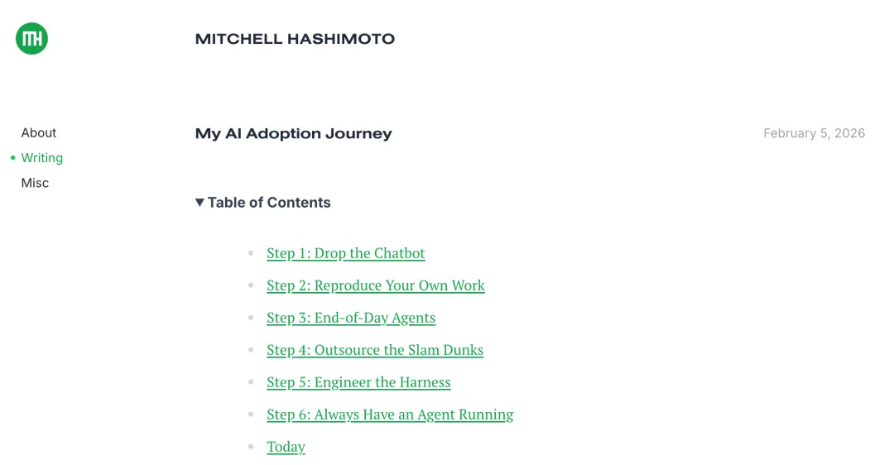
标题叫《My AI Adoption Journey》，中文大概是「我接纳 AI 的历程」。
讲的就是他作为一个老派工程师，是怎么一步一步从「不信 AI」到「每天让 Agent 替我干活」的心路历程。
他把整个过程拆成了 6 个 Step，前面几步都挺反直觉的，我挑几个有意思的给你讲讲。
第一步，直接扔掉对话框。他说一上来别用 ChatGPT 那种聊天界面，要用就用能自主执行任务的 Agent。为啥？因为聊天界面会给你一种「我在和 AI 讨论」的幻觉，但实际上你啥也没干，Agent 才是真正让 AI 动起来的形态。只有把 Agent 放开让它自己执行，你才能真正感知到它的能力边界在哪儿。
第二步更狠，他强迫自己用 Agent 去重做一部分自己早就已经手写过的代码。听起来是不是有点傻？明明自己两下就能写完的活，非要等 Agent 慢慢磨。他原话说这个过程「painful」，折磨人。但目的很明确：只有你亲自用 AI 去重做你已经熟得不能再熟的任务，你才能精准校准「它到底哪里行、哪里不行」。
然后到了第五步，他给自己这套做法起了个名字，就叫 Engineer the Harness，打磨这套马具。
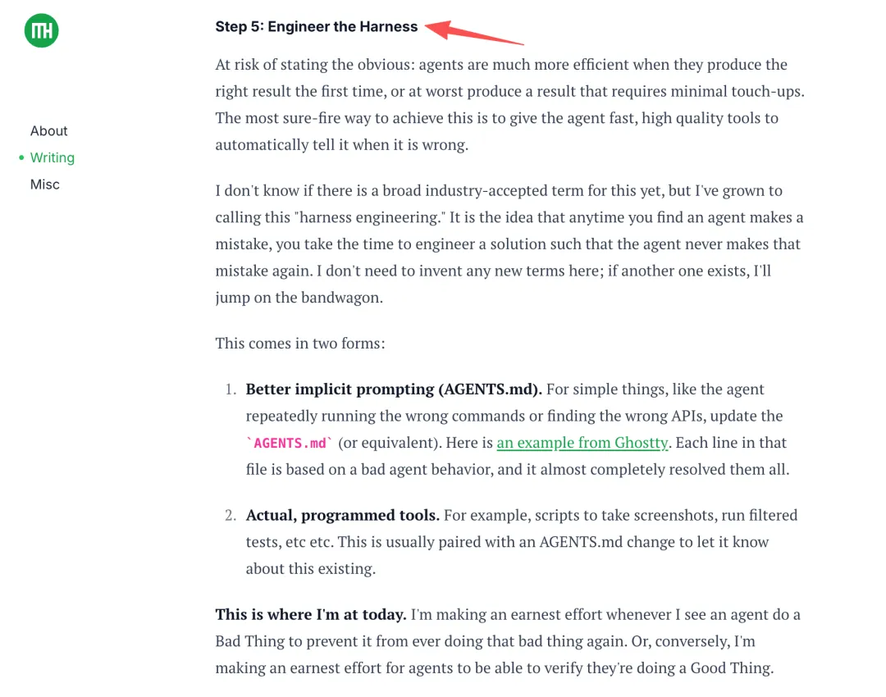
他给的定义特别简洁，我把原话翻译过来：
你品品这个思路。绝大多数人遇到 Agent 犯错是怎么办的？骂两句，手动改掉，祈祷下次它别再犯。
但 Mitchell 不是这么干的，他每次 Agent 犯错，都会停下来问自己：我能不能把这个错误永久性地修到环境里，让它下次在结构上就不可能再犯？
可能是给 AGENTS.md 加一条规则，可能是加一个 linter，可能是补一个自动化测试，也可能是搞一个 Git Hook。反正关键是：这个修补必须沉淀到环境里，而不是留在人脑子里。
这套做法的威力在于它是「复利」的。
每一次 Agent 犯错，环境就会变强一点；环境变强一点，Agent 下一次就更少犯错；犯错变少，你改进的速度就更快。时间一长，你的 Harness 会越来越坚固，Agent 在你这个项目里会越跑越稳。
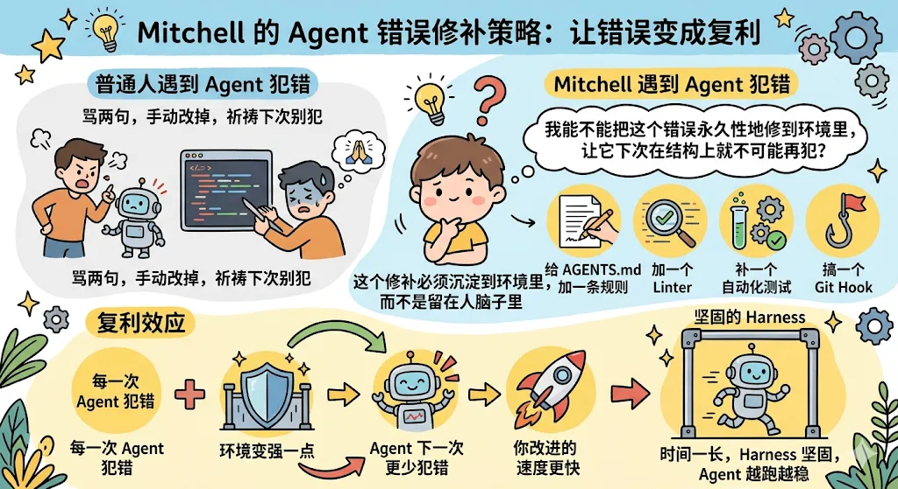
博客发出来一周后，OpenAI 紧接着也发布了一篇官方博客，标题就叫《Harness engineering: leveraging Codex in an agent-first world》。
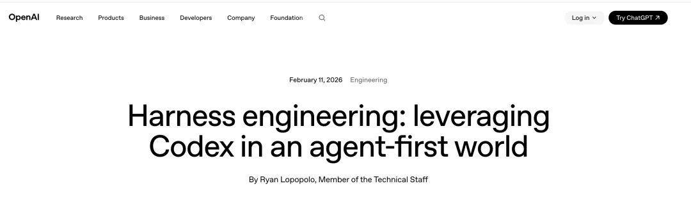
这篇博客讲的是他们内部一个从 3 人起步的小团队，从一个空仓库出发，用 5 个月时间，靠 Agent 写出了 100 万行代码、合并了 1500 个 PR，全程没人手动写过一行代码。
这篇博客一出，Harness Engineering 这个概念直接被推上了 AI 圈的风口浪尖。所以你能看明白这个词的路径了吧：
这种出身决定了它不会像很多 AI 新词一样「炒一波就凉」，它更像是一个在真实工程土壤里长出来的东西。
好，交代完来源，咱们进入正题。
从提示词到 Harness
要真正讲清楚 Harness Engineering 在解决啥问题，咱们不能一上来就讲它。因为它不是凭空冒出来的新概念，而是 AI 工程这几年一步一步「被逼出来」的结果。
你去复盘一下过去两年 AI 圈的变化就会发现一件特别有意思的事：AI 工程的重心，其实已经悄悄换过三次了。
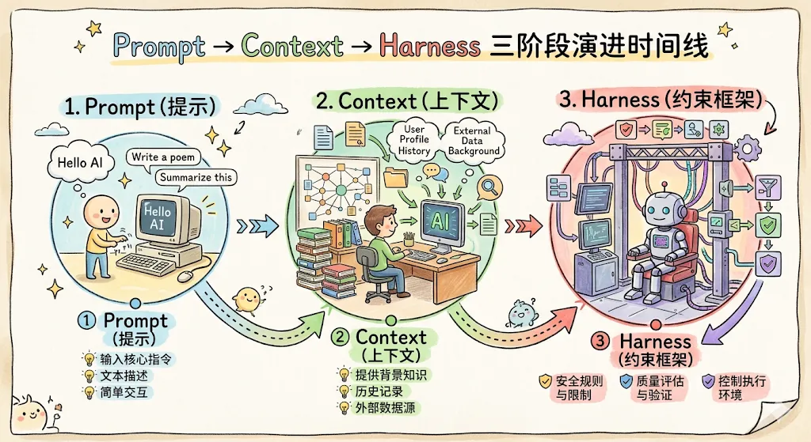
一开始大家在聊的是 Prompt Engineering，提示词工程。那个时候所有人都相信一件事：模型不是不会，只是你没把话讲明白，只要提示词写得够好，啥都能搞定。
后来大家发现事情不对劲。Agent 火起来之后，模型要做的事情越来越复杂，光「把话讲清楚」根本不够，它还得「知道」该用什么信息才行。于是 Context Engineering，上下文工程，接棒成为 AI 工程圈的新主角。
但这事到这儿还没完。当大家把上下文管得越来越精细之后，又发现了一个更扎心的问题：信息都给对了，模型在长链路任务里还是会跑偏。
提示词没毛病、上下文也没毛病，可它就是做不稳。正是在这个背景下，Mitchell Hashimoto 的那篇博客和 OpenAI 的那个百万行代码实验几乎同时出现，Harness Engineering 就这么被推到了台前。
你有没有感觉出这条脉络？这三个阶段不是谁取代谁，而是每一步都在上一步撞到天花板之后，继续往前啃出来的：
-
Prompt Engineering 解决的是：怎么让模型「听懂」你想干啥
-
Context Engineering 解决的是：怎么让模型「知道」该用什么信息
-
Harness Engineering 解决的是：怎么让模型在真实执行里「持续做对」一连串的事
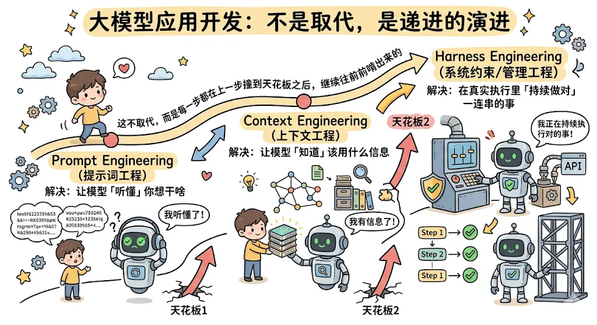
听起来三句话好像差不多对吧？但你一定要相信我，这三件事的难度和工作量，是层层放大的。
把一句话讲明白难吗？不难。把一整套信息在合适的时机送给模型就开始有点门槛了。而要搭出一整套能让模型「持续稳定交付」的运行环境，那完全是另一个量级的工程活。
这也顺便解释了一个很多人感到困惑的现象：同样是用 Claude 或者 GPT 这几个大模型，为啥有的团队做出来的 Agent 又稳又能打，到别人手里却一跑就跑偏？
差的往往不是模型，而是 围绕模型搭起来的那套东西，到底有没有做到位。
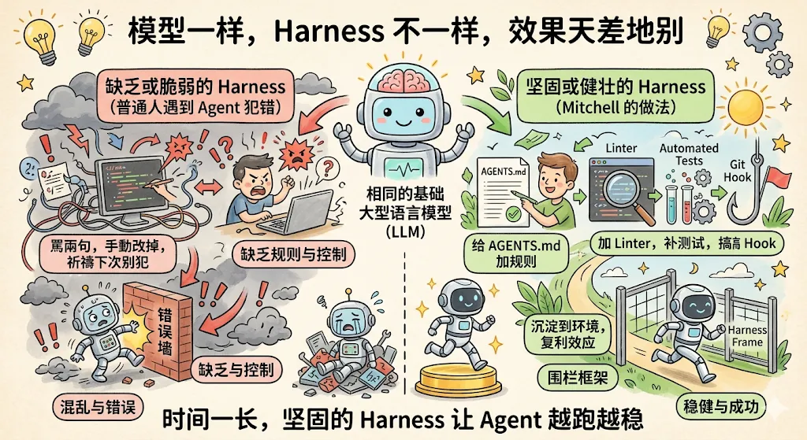
所以接下来，我就按照「从提示词到 Harness」这条路径，带你一个阶段一个阶段往下走。
-
先看看 Prompt Engineering 当年解决了啥问题、又撞上了啥天花板；
-
然后看看 Context Engineering 是怎么接棒的、又在哪儿遇到了新的瓶颈；
-
最后再来讲 Harness Engineering 到底是怎么在这两个天花板之上，又往前顶了一大截。
走完这条路，你对 Harness 到底是个啥，心里就会有一个非常清晰的底。
第一阶段：Prompt Engineering，先让模型「听懂」你
要讲清楚 Prompt Engineering，得先聊一个更基础的问题：大模型到底在干啥？
你平时用 ChatGPT 也好，用 Claude 也好，看到的都是一个对话框，输入一句话，下面给你输出一段话。但如果把这层外壳扒掉，里面其实就一个东西：一个特别大的参数文件，存在硬盘上，加载到显卡的内存里。
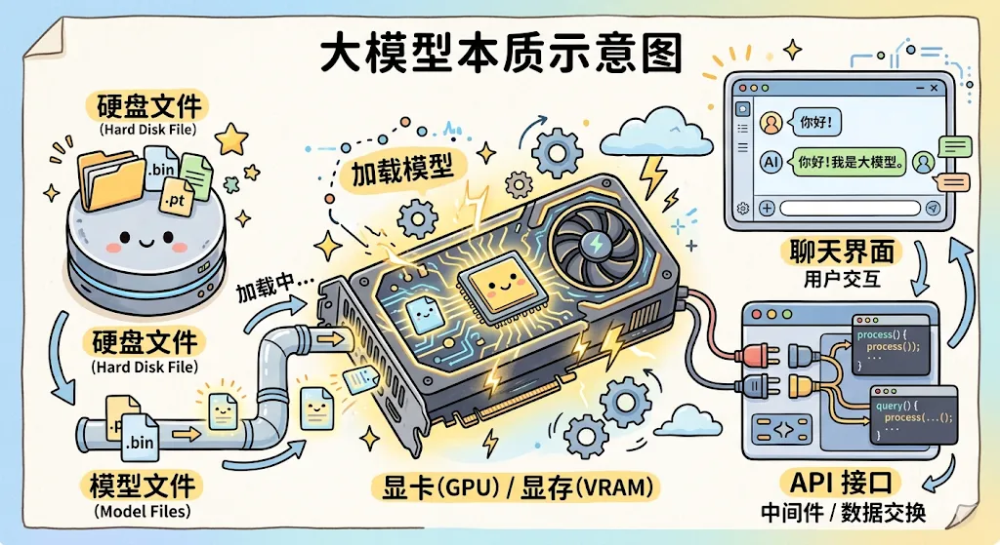
这个文件本身啥也不是。给它配一个 HTTP 接口，它就成了所谓的「大模型 API 服务」。给这个 API 套一个聊天界面，它就成了 ChatGPT；套一个代码编辑器，它就成了 Cursor、Trae 这种 AI IDE。
那这个参数文件本身是怎么工作的呢？说白了就一件事：根据你输入的内容，预测下一个字最有可能是啥。
注意我说的是「预测」，不是「思考」，这个区别很重要。它本质上是在猜你想要什么，然后把它觉得最可能的字一个一个往外吐。你给它的输入越模糊，它猜的范围就越大；你给它的输入越具体，它猜的范围就越收敛。
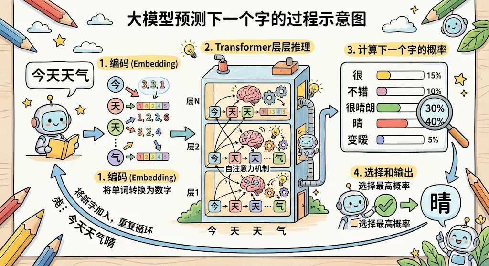
知道了这个原理，你就能理解为啥同一个问题，换个说法效果能差十倍。
举个例子。你丢一段代码给大模型，说「加个排序」。它会怎么回？大概率是给你回一段排序的代码片段，告诉你「就这么写」。但你拿到这段代码一看，傻眼了：它没说放在哪儿，也没说要不要改其他函数，更没把完整的代码给你。
那如果你换一种说法呢？「这是我的完整代码，请帮我加上对 users 列表按年龄从大到小的排序，注意保留原有的所有逻辑，最后输出完整代码」。这次它给的结果一下就靠谱多了。
为啥？因为大模型本质上是一个对上下文极度敏感的概率生成器。
什么叫敏感？就是你给它什么样的输入，它就会沿着那个方向生成。
你给它一个角色身份，比如「你是一个资深 Java 工程师」，它就会偏向用 Java 工程师的思路回答；你给它几个示例，比如「按照下面这个例子的格式来」，它就会沿着那个范式补全；你强调什么样的约束，比如「不要修改我已有的代码」，它就会把这个约束当成重点。
你会发现，写提示词的本质，根本不是在「命令」模型，而是在塑造它的概率空间。你给它的每一句话，都在悄悄地把它的输出往某个方向推。
正因为这种敏感性，大家慢慢摸索出了一套「提示词配方」。一个稍微正式一点的提示词，一般会包含这么几个部分：
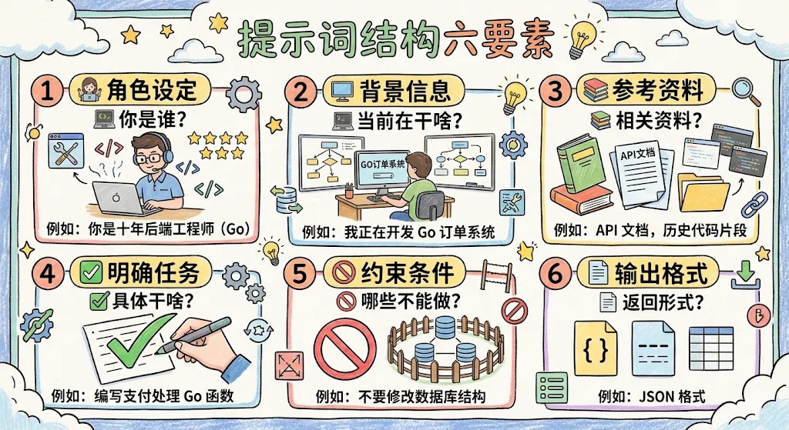
-
角色设定：你是谁？比如「你是一个有十年经验的后端工程师」
-
背景信息：当前在干啥？比如「我正在用 Go 写一个订单系统」
-
参考资料：相关的文档、历史对话、代码片段
-
明确任务：具体要你干啥
-
约束条件：哪些不能做，比如「不要修改其他文件」
-
输出格式：希望以什么形式返回，JSON、Markdown 还是表格
把这些东西按一定的结构组装起来，就是一份比较完整的提示词。这种有意识地去设计和调整提示词、让模型稳定输出你想要的内容的技术活，就叫 Prompt Engineering，提示词工程。
它解决的核心问题，其实就一个：模型不是不会，而是你没把问题说明白。
提示词工程在大模型刚火起来的那一两年，作用是非常大的。因为那个时候大家做的事情都很简单：聊天、写文案、翻译、问答。这种任务的特点是「短链路」，一句问一句答就完事了，提示词写好了基本就搞定。
但很快，大家想做的事情变复杂了，提示词工程就开始撑不住了。
举个例子。你让大模型帮你「分析一下我们公司去年的财报」，它再聪明，没看过你的财报，它能分析啥？你让它「按照公司内部的代码规范帮我写一个新功能」，它没看过你们的规范，它怎么知道该怎么写？你让它「在我们已有的几十个 API 之间做一些调用组合」，它根本不知道你有哪些 API。
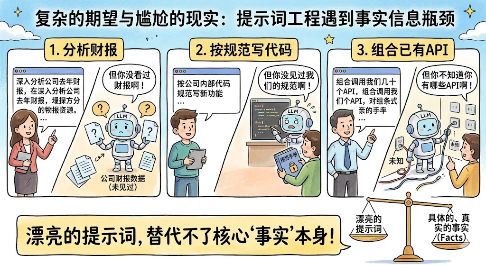
这个时候你就会发现一个很尴尬的事实：提示词写得再漂亮，也替代不了「事实」本身。
提示词擅长的，是把任务表达清楚、把约束讲明白，激发模型已有的能力。但它不擅长「凭空补出模型不知道的知识」，也不擅长「管理一大堆动态变化的信息」，更不擅长「在长链路任务里维持稳定的状态」。
说白了，提示词工程解决的是「表达」的问题，不是「信息」的问题。
于是第二阶段就来了：Context Engineering。
第二阶段：Context Engineering，让模型「知道」该用什么信息
为什么 Context Engineering 会突然火起来？因为大家做的产品形态变了。
之前大家做的是聊天机器人，问一句答一句，链路短、状态少。
但后来 Agent 火了，模型不再只是「回答问题」，而是要进到真实环境里去「干活」。它要多轮对话，要调用工具，要写代码，要查数据库，要在多个步骤之间传递中间结果，还要根据外部反馈不断修正自己的计划。
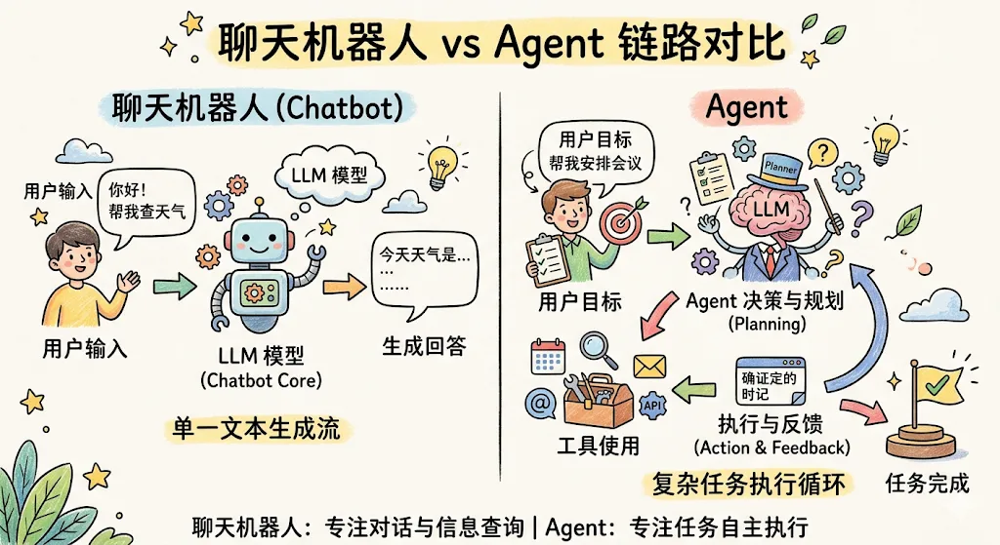
这个时候问题就完全变了。系统面对的已经不是「这一次回答对不对」，而是「整条链路能不能跑通」。
举个例子。如果你不是简单地问一句「帮我总结这篇文章」，而是让大模型做一个更真实的任务，比如：「帮我分析这份需求文档，找出潜在风险，结合我们之前几次评审的意见，给出改进建议，最后生成一份发给产品经理的反馈稿」。
你会发现，光靠一句提示词，根本完成不了这个任务。模型至少需要拿到：
-
当前的需求文档
-
历史的评审记录
-
公司的相关规范
-
当前任务的具体目标
-
之前已经分析出来的中间结论
-
收件人是谁、希望用什么语气
这些东西全部加起来，才叫一个完整的「任务环境」。
正是基于这个观察，才慢慢形成了一个新的概念：Context（上下文）。
什么叫上下文？我用一句最直白的话解释：
每一次发给大模型的所有信息加在一起，就叫上下文。
而我们之前聊的提示词，只是上下文里很小的一部分。一个完整的上下文还包括：用户输入、历史对话、检索到的资料、工具返回的结果、当前的任务状态、中间产物、系统规则、安全约束等等等等。
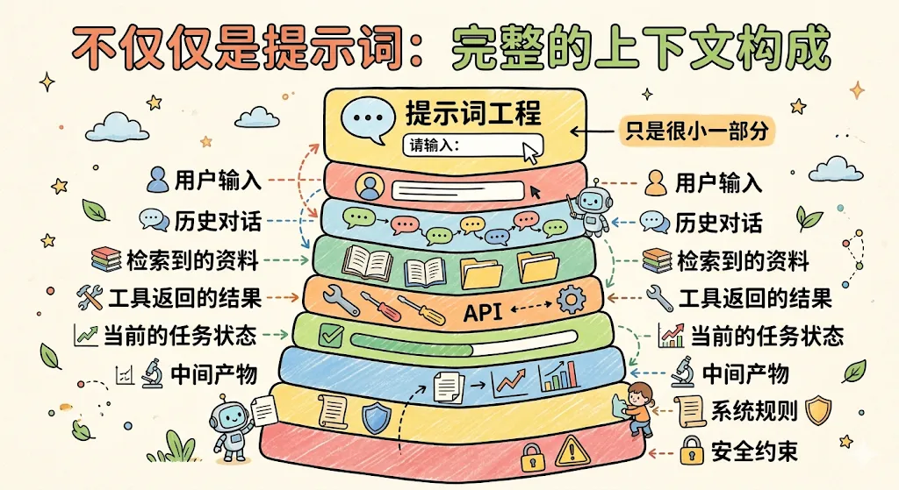
理解了这一层，你就能理解 Context Engineering 是在干啥了。它的核心思想就一句话：
模型未必知道，所以系统必须在合适的时机，把正确的信息送进去。
你可能会想：那我把所有相关的资料一股脑全塞进去不就完事了吗？
这里就有一个让人头疼的现实：大模型一次能处理的上下文是有上限的。这个上限叫「上下文窗口」。
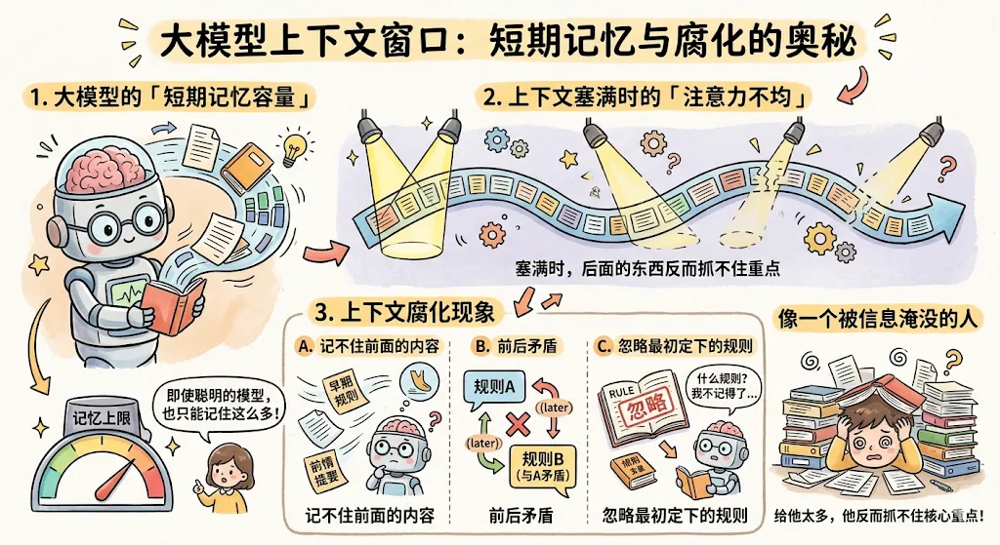
你可以把它想象成大模型的「短期记忆容量」。再聪明的模型，一次也只能记住这么多东西。
更要命的是，就算窗口够大，大模型的注意力也不是均匀分布的。研究发现，当上下文塞得太满的时候，模型会出现一种叫「上下文腐化」的现象：它开始记不住前面的内容，开始前后矛盾，开始忽略你最初定下的规则。
我自己感觉这个特别像一个被信息淹没的人：你给他太多东西要看，他反而抓不住重点。
那怎么办？这就是 Context Engineering 要解决的核心问题：怎么在上下文窗口有限的前提下，把最相关的信息，以最合理的方式，送给模型。
实践下来，它基本上可以拆成三个步骤：
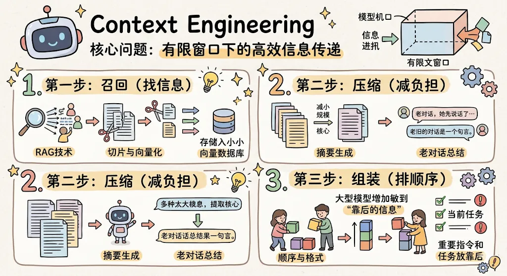
-
第一步， 召回。说白了就是「找信息」。从一大堆资料里找出跟当前任务最相关的那部分。这里面就涉及到大家熟悉的 RAG 技术：把你的所有文档切成小块，转成向量存起来，每次有问题进来，先去向量数据库里搜出最相关的几块。
-
第二步， 压缩。找到的信息可能还是太多，那就压缩。怎么压？常见的做法是先让模型对每一段做个摘要，然后只把摘要送进最终的上下文。或者，对历史对话，把太老的对话压缩成一句话总结，只保留最近几轮的原文。
-
第三步， 组装。压完之后还要按一定的顺序、一定的格式组装起来。为啥顺序很重要？因为大模型对「靠后的信息」更敏感。所以重要的指令、当前的任务，往往要放在靠后的位置。
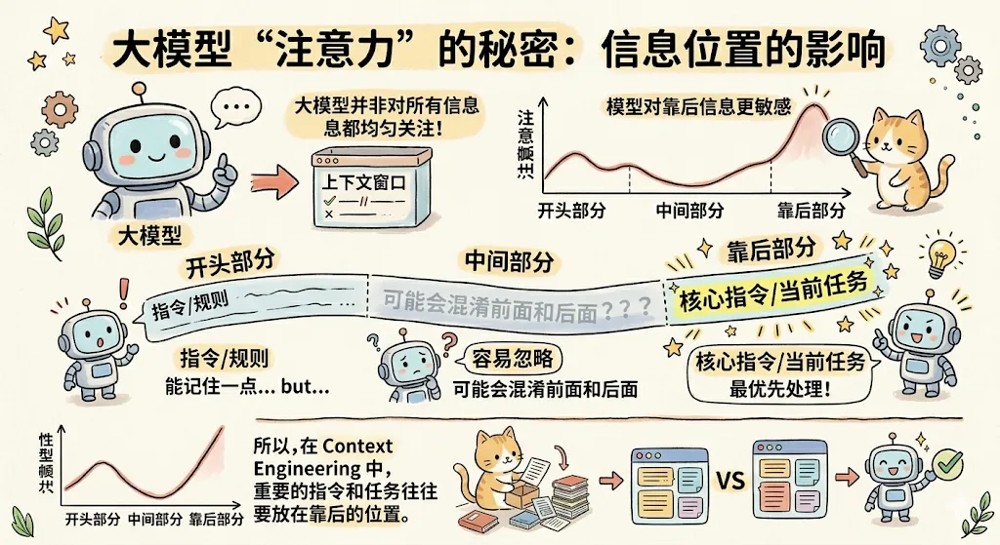
不同的 AI 工具，这三步的实现各不相同。
这就是为啥同样是用 Claude 模型，你用 Claude Code、Cursor、Trae 这些不同的 AI IDE，效果会差挺多。模型是同一个，但每家的上下文工程策略不一样，所以最后的体验也不一样。
讲到这儿，我想专门聊一下 Anthropic 最近搞的 Agent Skills，因为它特别能体现「上下文工程不是塞得越多越好」这个理念。
很多人做 Agent 的时候，会犯这么一个错误：把所有可能用到的工具说明、所有 SOP、所有参考资料，一上来就一股脑塞进上下文。理论上，模型知道得越多越好，对吧？
但实际上效果往往更糟糕。
为啥？还是那句话：上下文窗口是稀缺资源，信息一多注意力就会被稀释。模型看到的东西一多，反而抓不住当前任务真正需要的那部分。
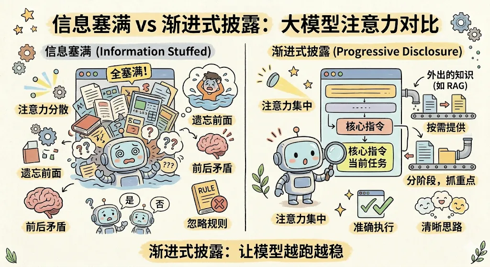
Agent Skills 提出的思路叫「 渐进式披露」：一开始只给模型看每个能力的「目录」，告诉它「我有这些工具、这些 SOP、这些参考」。
等模型真的判断「我现在需要用某个工具」的时候，再把那个工具的详细说明、参数定义、使用示例动态加载进来。
这个思路其实非常重要，它告诉我们：上下文优化的本质不是「给得更多」，而是「按需给、分层给、在正确的时机给」。
讲到这儿，Context Engineering 的核心思想基本就讲完了。它在 Prompt Engineering 的基础上又往前走了一大步：从「把任务讲清楚」升级到了「把信息送对」。
但你以为这就是终点了吗？
不是。
第三阶段：Harness Engineering，让模型「做对」一连串的事
后来大家又发现了一个更麻烦的问题。
你把提示词写得再漂亮，把上下文管理得再完美，模型在「单步」上的表现确实越来越好了。但只要任务的链路一长，模型就还是会出问题。
什么问题？比如：
-
计划做得很好，但执行的时候突然跑偏了
-
调用工具调对了，但理解错了工具返回的结果
-
在一个很长的任务链里，已经悄悄偏离初衷了，但系统完全没察觉
-
跑着跑着突然忘了自己最初要干啥
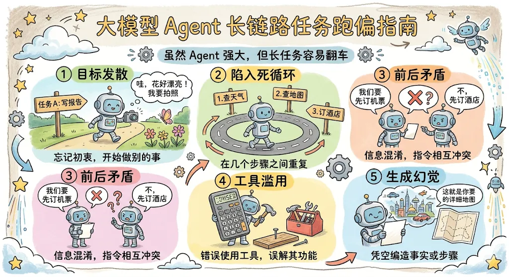
你仔细品品这个问题。提示词工程优化的是「意图的表达」，上下文工程优化的是「信息的供给」，但这两个其实都还停留在「输入侧」。
而当模型真正开始「连续行动」的时候，会出现一个全新的问题：谁来监督它？谁来约束它？谁来在它跑偏的时候把它拉回来？
这就是第三阶段要解决的事情。
Harness 这个英文词，直译过来叫「马具」，或者说「缰绳」。
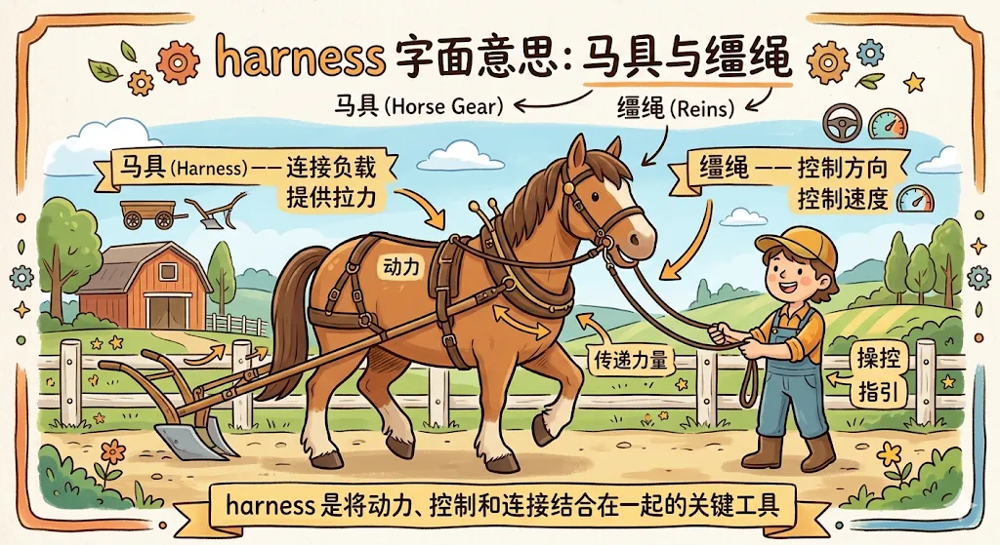
为啥用这么一个词来命名一个 AI 工程概念？想象一下你骑马的场景：马本身有强大的力量，能跑能跳能驮东西，但如果没有缰绳和马具，这股力量就是失控的。马可能往悬崖上跑，可能甩你下来，可能跑去吃草不回来了。马具的作用，就是让这股力量为你所用。
放在 AI 系统里，这个比喻就特别贴切了。 当模型从「回答问题」走向「执行任务」，系统就不能只负责喂信息，还要能「驾驭」整个执行过程。这就是 Harness Engineering 的出发点。
如果说前两代工程关注的是「怎么让模型更会想」，那 Harness 关注的就是「怎么让模型不跑偏、跑得稳、出了错还能爬起来」。
讲到这儿，我用一个特别通俗的例子，把这三个阶段的区别一次性给你讲清楚。
假设你是一个销售经理，要派一个刚入职的新人去做一次很重要的客户拜访。
你会做哪些事情呢？
第一件事，把任务讲清楚。你会告诉他：「见到客户先寒暄，然后介绍方案，再问需求，最后确认下一步」。这就是 Prompt Engineering，重点是把话说明白，不让新人懵。
第二件事，把资料准备齐全。光把流程讲清楚不够，新人还得知道：客户是谁？之前聊过啥？产品报价多少？竞品啥情况？这次会议的目标是啥？这些资料你都得给他。这就是 Context Engineering，重点是把信息供给到位。
第三件事呢？如果这是一个特别重要的客户，你光把流程讲清楚、资料给齐了，你心里还是不踏实对吧？你还会做更多的事情：
-
让他带一份 checklist 去，每个关键节点都要打勾
-
让他在关键节点实时给你汇报
-
让他录音，回来你要复盘
-
如果发现他拜访过程中跑偏了，马上电话纠正
-
拜访完成后，要按照明确的标准去验收成果
这一整套东西，就是 Harness。它的重点已经不是「把话讲清楚」「把资料给齐」了，而是「有没有一整套机制能持续观测、持续纠正、最终验收」。
是不是一下就清楚了？
关于 Harness 的边界，圈子里流传着一个特别简洁的等式：
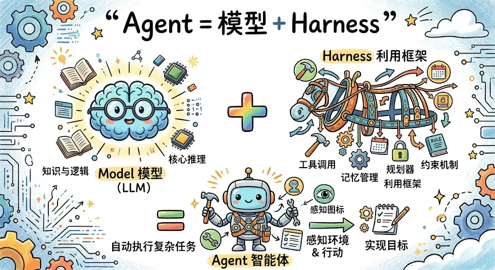
翻译成人话：在一个 AI Agent 系统里面，除了模型本身之外，几乎所有决定它能不能稳定交付的东西，都属于 Harness。
所以你也可以反过来推：
这个公式我特别喜欢，因为它一下就把 Harness 的边界划清楚了。
讲到这儿你可能会问：那是不是 Harness Engineering 出来了，前面那两个就过时了？
不是的。这三者根本不是替代关系，而是包含关系。
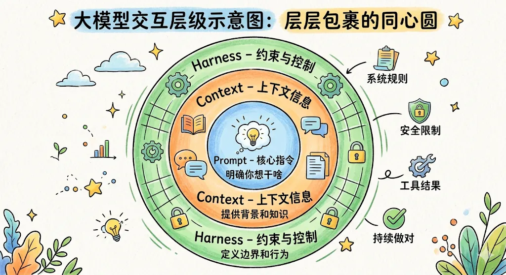
-
Prompt 是对「指令」的工程化
-
Context 是对「输入环境」的工程化
-
Harness 是对「整个运行系统」的工程化
它们的边界一层比一层大。Prompt 是 Context 的一部分，Context 是 Harness 的一部分。当你做 Harness 的时候，里面一定包含 Context 工程，Context 工程里又一定包含 Prompt 工程。
所以 Harness Engineering 不是来取代谁的，它是站在更大的系统视角上，把前面这两个都包进去了。
好，到这里 Harness Engineering 是啥、和前面两个啥关系，就基本讲完了。但只懂概念肯定不够，下一章我要把它拆开，看看一个成熟的 Harness 到底包含哪些东西。
Harness 拆开看，里面到底装了些啥？
如果你去看 OpenAI、Anthropic、LangChain 这些做 Agent 的顶级团队，会发现一件挺有意思的事：他们的产品形态不一样、技术栈不一样、服务对象也不一样， 但你把他们的 Harness 掀开看内部结构，里面的组件居然惊人地相似。
这不是巧合。而是因为「让一个 Agent 在真实世界里稳定工作」这个命题，天然就会推着所有人往同一个方向收敛。一个成熟的 Harness 大致可以拆成六块核心组件，我把它们叫做六层，每一层都在解决「驾驭」这件事的一个独立维度。
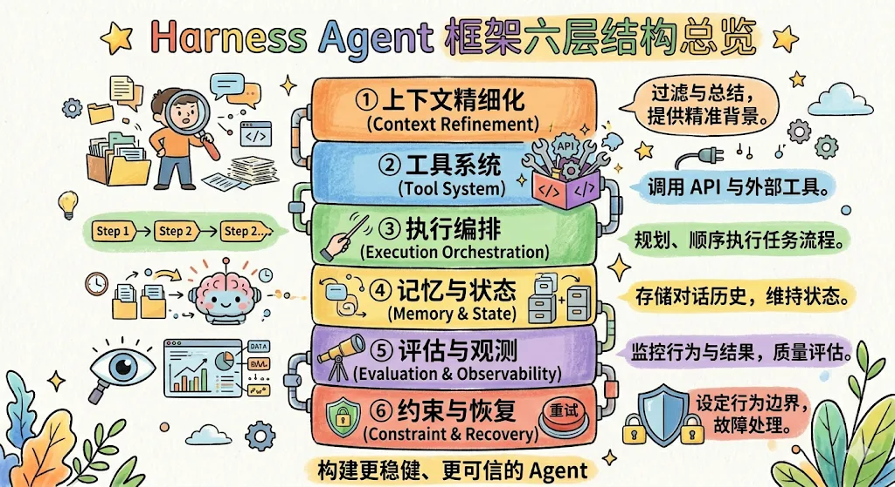
这六层看起来有点多，但其实可以按「它在干啥」分成三组：
-
输入侧（让模型看到正确的东西）：上下文精细化管理 + 记忆与状态管理
-
动作侧（让模型做出正确的事）：工具系统 + 任务执行编排
-
校验侧（让模型知道做没做对 + 出错能爬起来）：评估观测 + 约束恢复
你发现没有？这三组其实对应了一个工程师在真实环境里干活的三个必要条件： 看得准 → 做得对 → 错了能兜底。任何一个成熟的 Harness，你去拆一拆，都能找到这三组六层的影子。
在真正展开六层之前，我想先把每一层对应的那个「要解决的核心问题」用一张表提前摆到你面前。这张表你可以当成整章的路线图，后面每读完一层，回头瞄一眼，就知道自己读到哪儿、哪些还没读：
| 层 | 这一层在解决的一句话问题 |
|---|---|
| 上下文精细化 | 模型这一轮该看到什么？ |
| 工具系统 | 模型用什么动手？ |
| 执行编排 | 模型下一步该干啥？ |
| 记忆与状态 | 模型跨轮该记住什么？ |
| 评估与观测 | 模型做得好不好有没有尺子？ |
| 约束与恢复 | 模型出错了能不能爬起来？ |
你看这六个问题，它们根本不是什么技术理论的包装，而是一个真实工程师在真实环境里做事情的时候，本能会问自己的那六件事。这也是为啥 OpenAI、Anthropic、LangChain 这些完全不同的团队，最后都不约而同地收敛到差不多的结构上。 这六层不是谁凭空发明的，是从现实里长出来的。
为了让这六层不至于变成抽象的概念堆，我决定挑一个贯穿整章的具体例子。后面每讲一层，我都会回到这个例子里给你一个具体画面。例子是这样的:
好，带着这个 PR Review Agent，我们一层一层往下看。
第一层，上下文的精细化管理
先说输入侧的第一件事： 模型每次被调用的时候，到底该看到什么？
这里有个特别关键的修饰词，「每次被调用的时候」。我专门强调它是因为这一层很容易和第四层（记忆与状态）搞混。简单区分一下：
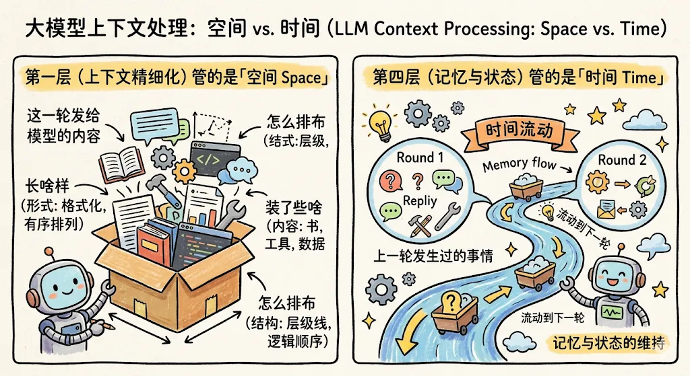
-
第一层（上下文的精细化）管的是「空间」：这一轮发给模型的那一坨上下文，长啥样、装了些啥、怎么排布
-
第四层（记忆与状态）管的是「时间」：上一轮发生过的事情，怎么流动到下一轮
你可以把它想成一台相机：第一层是「取景框」，第四层是「胶卷」。两件事都重要，但看的方向完全不同。
回到我们的 PR Review Agent。它每处理一个 PR 的时候，到底该看到什么？最粗暴的做法是把整个 PR 的 diff 全扔给它，这恰恰是最容易犯的错。它真正需要的其实是一组 精挑细选的信息：
-
PR 的标题和描述
-
diff 里真正被改动的那几个文件
-
这些文件在仓库里对应的模块说明
-
作者最近几次提交的风格偏好
-
仓库的 code review 惯例
你塞给它越多无关信息，它的注意力就越散。这个现象 Anthropic 在他们的博客里专门命名了，叫「context rot」（上下文腐化）。他们给的解法是「just-in-time retrieval」，也就是让 Agent 边干活边按需抓信息，而不是一上来就把所有可能有用的东西一股脑塞进去。
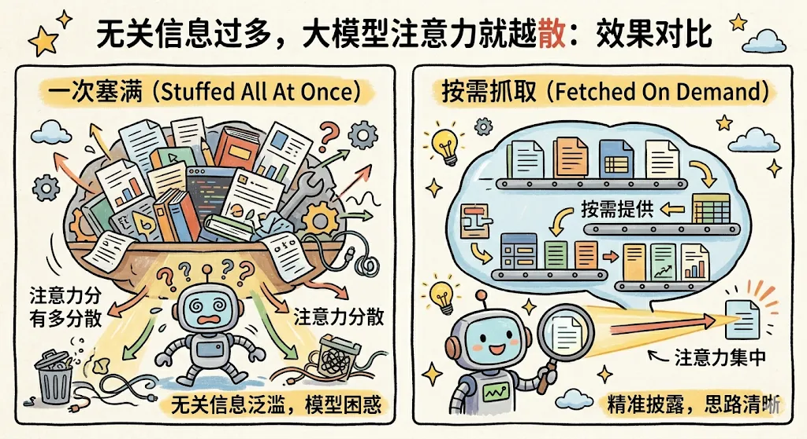
所以这一层的核心工作可以浓缩成三件事：
-
第一， 把角色和目标钉死。模型得知道自己是一个「PR 审查助手」，当前任务是「挑出值得关注的 PR 并生成摘要」，成功标准是「我挑出来的真的都是该被关注的」。大部分 Agent 跑偏，根源就是这一步没说清楚。
-
第二， 动态筛选而不是一次塞满。只把当前这个 PR 相关的那几块信息拉进来，其余的留在文件系统里，等需要了再取。
-
第三， 结构化组织。固定规则（code review 惯例）放一处，动态证据（当前 PR 的内容）放一处，中间结论（我对这个 PR 的初步打分）放一处，三者要分开。否则模型会「自我污染」，也就是用前面错的中间结论去影响后面的判断。
第二层，工具系统的可控调用
聊完「看到什么」，再聊「能做什么」。
没有工具的大模型本质上还是一个文本预测器。它能告诉你一个 PR 应该怎么审，但它没法 真的去 GitHub 上读那个 PR；它能写出一段 Slack 消息的文本，但它没法 真的把这段消息发到你的频道。
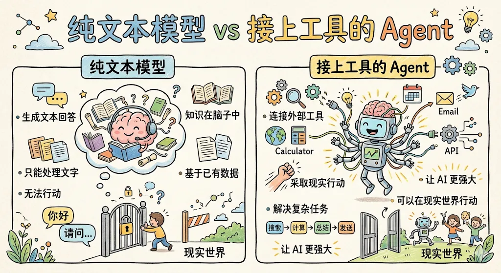
接上工具之后，PR Review Agent 才真正活过来。但工具不是接得越多越好。OpenAI 在做 Codex 早期踩过这个坑：他们一开始给 Agent 接了一堆工具，想着「选择多总是好的」，结果 Agent 频繁用错工具、用错时机。后来砍掉一大半，效果反而上去了。
所以这一层你要回答三个问题：
给它哪些工具？ 对 PR Review Agent 来说，至少需要四件：
-
gh命令行工具：拉 PR 列表、看 diff -
读文件工具：看仓库里的相关代码
-
代码搜索工具：查某个函数在哪儿被用到
-
Slack 发送工具：把结果发出去
别的工具，比如「重跑 CI」「直接给 PR 打标签」，除非真的必要，先别加。
什么时候用哪个工具？ 该查的时候要查，不该查的时候别瞎查。比如 Agent 判断「这个 PR 改的函数是不是核心逻辑」的时候应该去代码搜索，而不是凭感觉猜。反过来，明明 diff 已经在上下文里了，再去重新拉一次 PR 纯属浪费。
工具结果怎么喂回模型？ 这条最容易被忽略。比如 Agent 调用代码搜索，拿到 30 条匹配。你是不是要把 30 条原文原样塞回去？不是。你要先做一层提炼，比如只留核心模块的那几条，再喂回去。否则这 30 条原文一进来，上下文又被污染了。
你最近听得很多的 MCP（Model Context Protocol），本质上就是在做工具层的标准化，让任何工具都能用同一种方式接到任何 Agent 上，大家不用再各自重复造轮子。
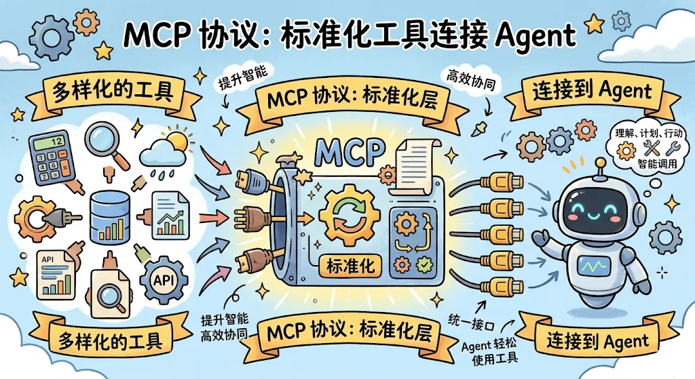
第三层，任务执行的全局编排
工具接上了，模型就能动手了。但能动手不等于能做成事。
这里我直接把一句你需要记住的话摆出来： Agent 的本质，说白了就是一个 for 循环。思考一步 → 行动一步 → 观察结果 → 再思考下一步。这个循环结构有个很经典的名字叫 ReAct（Reasoning + Acting）。
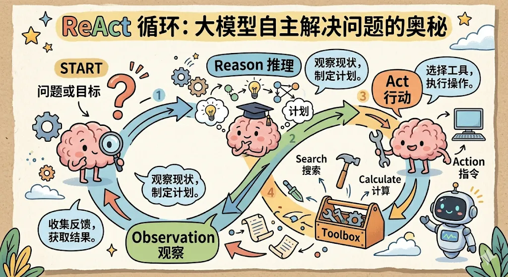
听起来很朴素对吧？但魔鬼就藏在这个循环里。
Agent 经常翻车的场景是： 每一步它都会做，但把所有步骤串起来之后就不会了。它会拉 PR 列表，会读 diff，会写摘要，但它不知道应该先拉全列表再逐个分析，还是应该边拉边评，最后交付给你经常就是一堆半成品。
这就是第三层的职责： 给模型一条明确的工作轨道。
回到 PR Review Agent。它的工作轨道应该是这样：
有了这条轨道，Agent 就知道「我现在在哪一步，下一步该干啥」。它不会再瞎跑。
除了 ReAct 之外，还有几个业界常见的编排模式你可以记一下名字： Plan-and-Execute（先规划完整计划再执行，适合长链路任务）、 Reflexion（每次失败都让 Agent 反思一下再重试）、 Tree of Thoughts（同时探索多条思路再选最好的）。不同场景会用不同的编排策略。
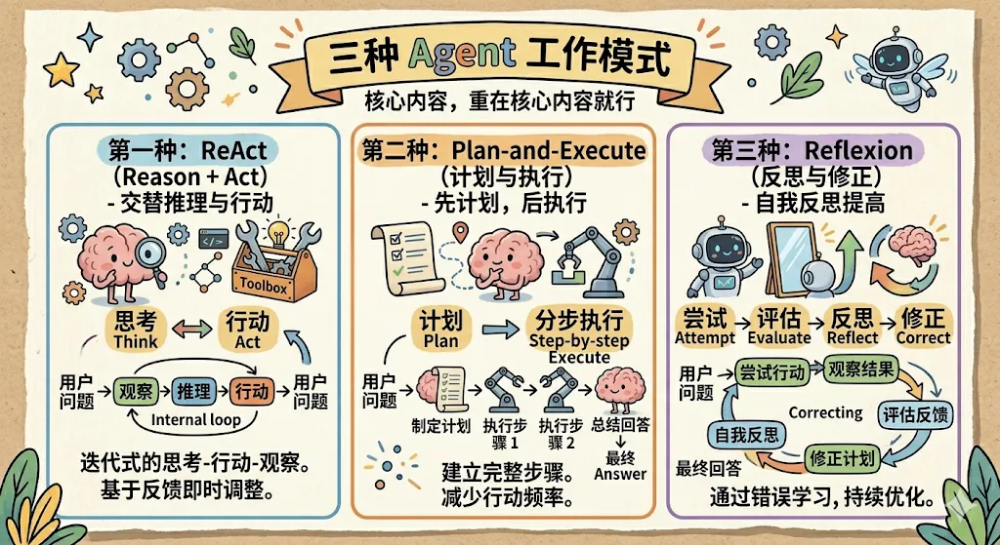
第四层，记忆与状态的分层管理
现在聊时间侧：Agent 怎么在「跨轮」之间保持连贯？
没有状态管理的 Agent，每一轮调用之间都是失忆的。
你的 PR Review Agent 今天跑了一遍，明天再跑的时候完全不记得「这个 PR 昨天已经审过了」，于是又审一遍再发一次消息，Slack 频道很快就会变成重复消息的坟场。
这就是为啥 Harness 必须管状态。
这里要回扣我们开头讲的 Mitchell Hashimoto 和 Anthropic 的一个核心洞察： Agent 的状态不应该放在上下文窗口里，而应该外化到文件系统。
Anthropic 在《Effective harnesses for long-running agents》里给出的具体做法是让 Agent 维护一个 claude-progress.txt 日志、一个 init.sh 启动脚本、加上完整的 git history，作为「长期记忆介质」。下一轮换一个全新的、干净的上下文窗口接手时，从这些文件里一读，立刻就知道「现在到哪一步了」。
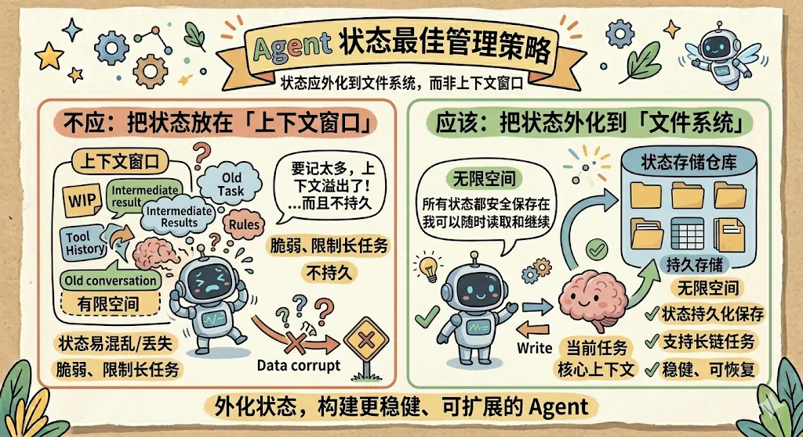
放到 PR Review Agent 上，你可以做同样的事。它需要管的状态至少有三类， 必须分层存：
-
任务状态：今天已经处理到哪个 PR 了？还剩几个？每个的打分是多少？这类信息写在一个
today-progress.json里，当天任务跑完就归档 -
会话中间结果：当前这一轮里 Agent 对某个 PR 做出的初步判断。这类信息随会话结束就可以丢，不用持久化
-
长期记忆和用户偏好：你喜欢关注什么类型的 PR？你特别看重哪些模块？这类信息写在常驻的
user-preferences.md里，每次调用都注入
你发现没有？这三类记忆的生命周期完全不同：任务状态活到任务结束，会话中间结果活到当轮结束，长期记忆跨所有任务存在。混在一起就乱了， 分清楚才能用好。
顺便说一句，Claude Code、Cursor、Trae 这些 AI IDE 里的规则文件（CLAUDE.md / .cursorrules），就是「